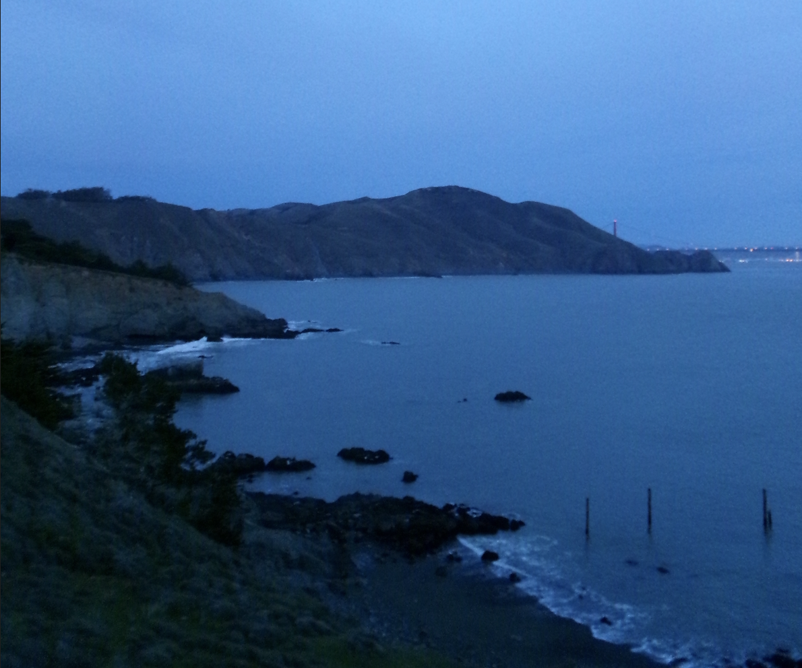

I decided to recreate this photo I took while in San Francisco last winter. I chose this one as I was starting get a little homesck, and figured this would be a good time to get that feeling out of my system. Additionally, this photo looked like it would be fun to work with. To achieve this, I used the gradient tool to help me with depth/ color variation, since we could only use 3. I initially tried to use Image Trace (out of curiosity), but found that it did not look the best. So I chose to go in with the pen tool and do my best to "trace" out what I considered to be the most important/recognizable parts of the image. Additionally, I used the paintbrush tool to add the details of the rippling waves to my best ability.
HOME